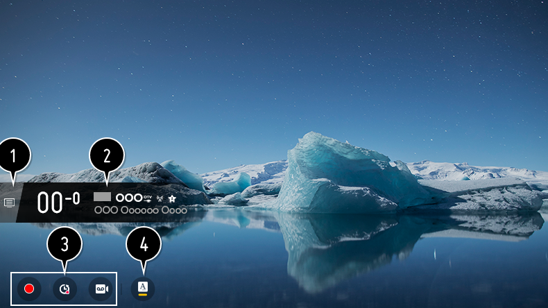

Visualización de la información de programas
Durante la emisión en directo, pulse el botón .
Aparecerá el visor de canales.

-
Vaya a Canales.
Para ver los detalles, Disfrutar la TV en vivo Menú en vivo en Guía del usuario. -
Muestra la información sobre el programa que está viendo.
Seleccione el banner de un canal para abrir la ventana emergente y ver la información detallada del programa o ejecutar otras funciones relacionadas con el banner.
- Puede ver información de programación de otros canales utilizando los botones / .
- Puede ver información de programación del canal que esté viendo utilizando los botones / .
- Pulse el botón del mando a distancia para desplazar la posición del visor.
Las funciones se pueden controlar solo en la ventana emergente de información detallada. -
Muestra contenido relacionado con la grabación/Live Playback.
Para ver los detalles, Disfrutar la TV en vivo Live Playback en Guía del usuario. - Si el programa que está viendo incluye información como Subtítulo o Idioma de audio, puede configurar estas opciones.
- : Permite configurar Subtítulo.
-
:
Permite configurar Idioma de audio.
Solo disponible con retransmisiones digitales.
-
:
Permite configurar Audio múltiple.
Solo disponible con retransmisiones analógicas.
Las funciones disponibles pueden variar en función de la señal de retransmisión.